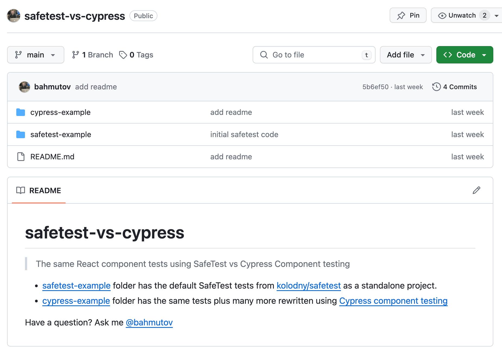
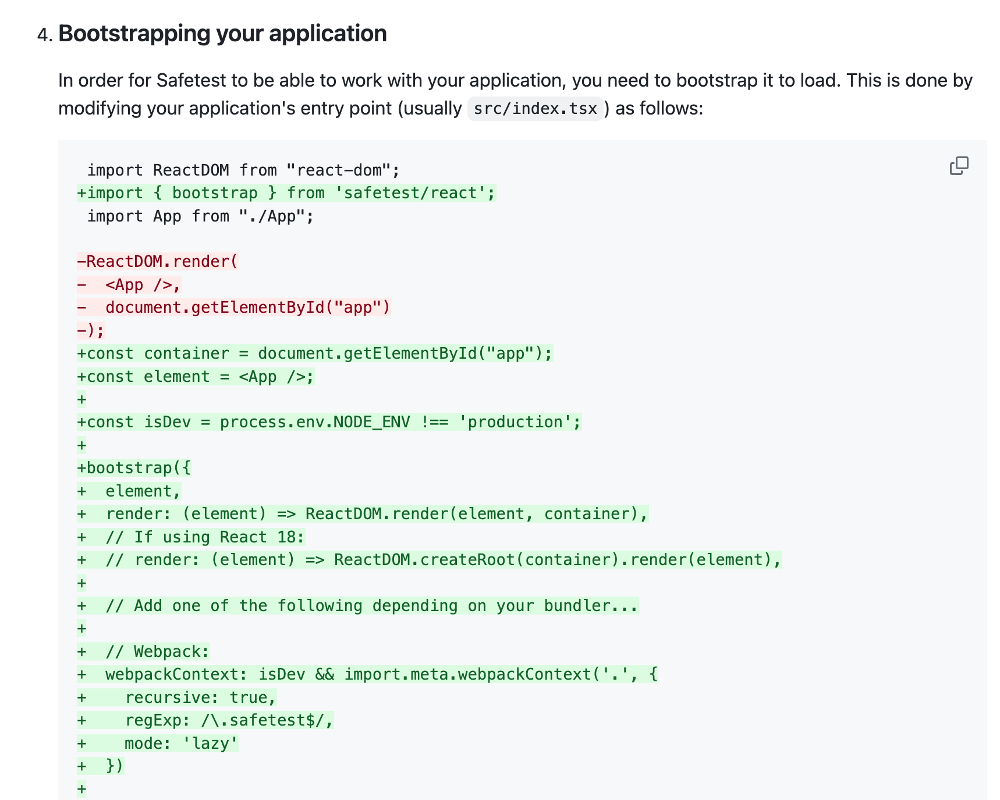
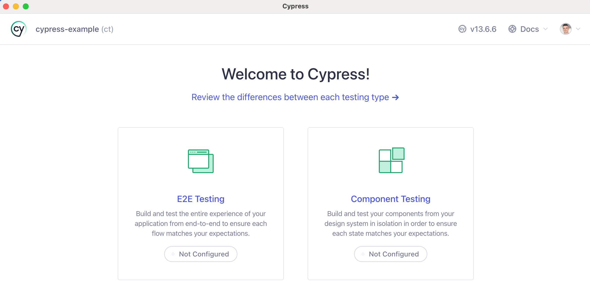
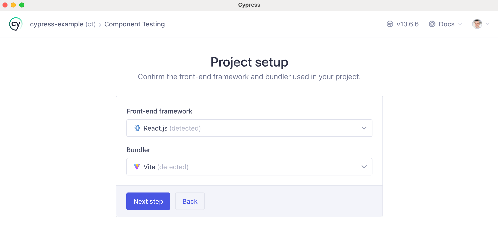
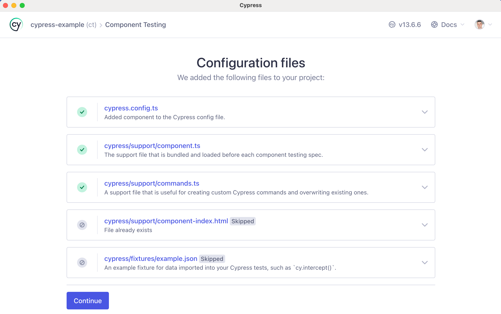
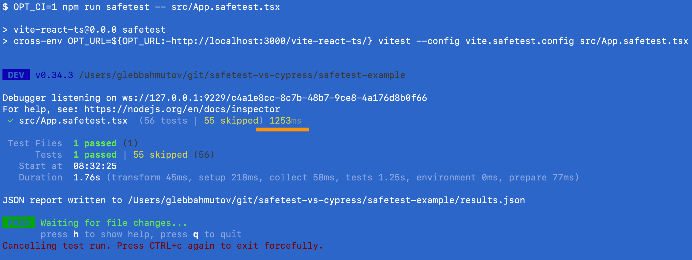
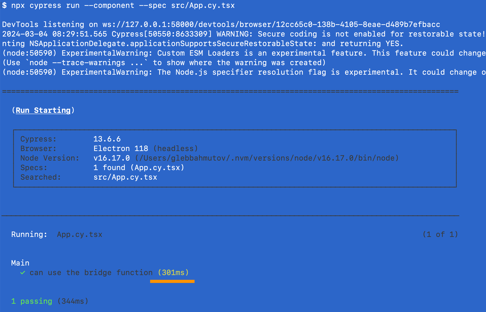
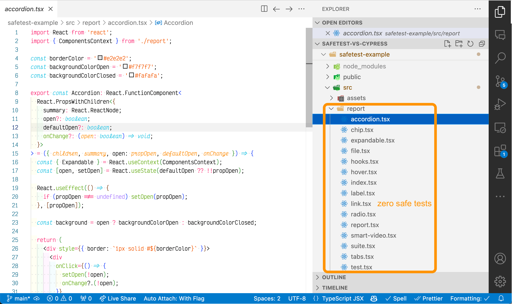
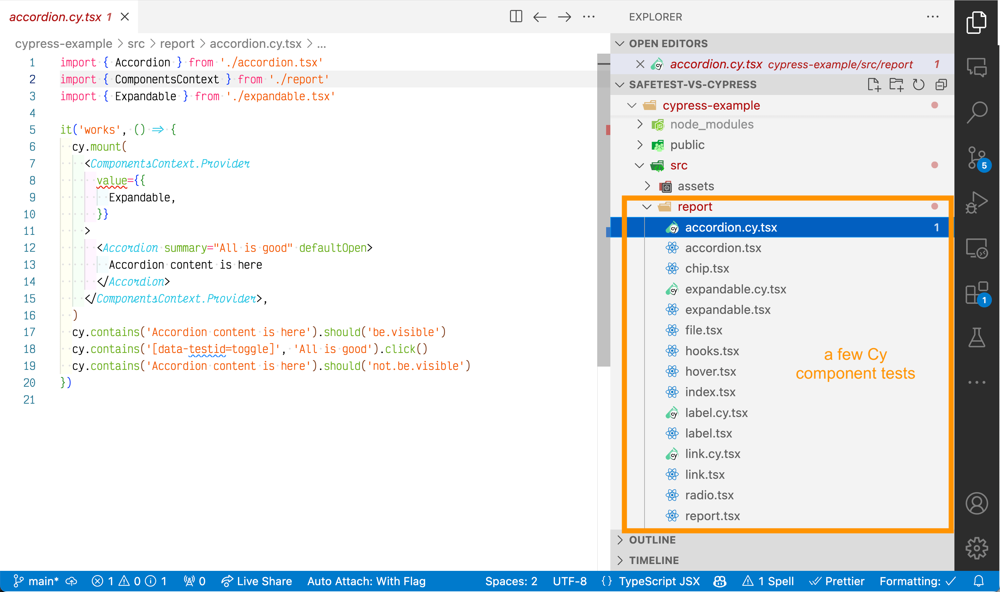

Recently Netflix has released SafeTest - a component testing framework built on top of Playwright. In this blog post I want to compare it to my Cypress component testing feature. To compare these test runners using concrete examples I grabbed an example from the SafeTest's own repo and placed with additional Cypress tests into the repo bahmutov/safetest-vs-cypress.

Let's see if can learn what SafeTest can and cannot do.
- Is it dev or prod dependency?
- Installation
- Hello World test
- Test speed
- Mocks and Spies
- Overrides, providers, etc
- Dev experience
- Dev support
- The final tally
- Update 1: SafeTest vs Cypress vs WebDriver
Is it dev or prod dependency?
The first thing I have noticed was that SafeTest seems to be a production dependency. Yes, the docs say to install SafeTest using npm install --save-dev safetest, but then you should include it in your src/index.tsx file:
1 | import ReactDOM from "react-dom"; |
The example folders in kolodny/safetest all list safetest as a prod dependency:
1 | { |
Call me old-fashioned, but I feel a testing library should be a dev dependency, just like Cypress.
| Feature | SafeTest | Cypress Component Testing (CT) |
|---|---|---|
| Dependency | prod 👎 | dev 👍 |
Installation
With SafeTest you create a config file setup-safetest.tsx, add package.json scripts, and modify your src/index.tsx file.

You also need to be running the application before you can start testing, just as if this was an end-to-end test against the local environment.
With Cypress, you just open it and click on the "Component Testing".

Cypress finds from the source code the framework your are using and creates appropriate files automatically.


The modifications to the cypress.config.ts file:
1 | import { defineConfig } from "cypress"; |
That it is. You can start writing component tests.
| Feature | SafeTest | Cypress Component Testing (CT) |
|---|---|---|
| Dependency | prod 👎 | dev 👍 |
| Installation | manual 👎 | auto 👍 |
| Start the app | needed 👎 | not needed 👍 |
Hello World test
Let's take a look at the example test shown in the SafeTest folder.
1 | import { describe, it, expect } from 'safetest/vitest'; |
We are rendering a simple React component with the text "Test1" and confirm it is visible. SafeTest is built on top of Playwright, thus the test runs in a real browser. The test confirms that the component is visible in the real browser. Nice. The same test can be written using Cypress:
1 | describe('simple', () => { |
Let's interact with a component. Here is the example test that clicks on the component 500 times.
1 | it('can do many interactions fast', async () => { |
And an equivalent Cypress component test
1 | it('can do many interactions fast', () => { |
Ok. How about using shortcut to change the state of the component to perform an "app action"? SafeTest can give you a "bridge" function, whatever it is:
1 | it('can use the bridge function', async () => { |
Seems we need the bridge to call the component code running in the browser from the Playwright test running in Node. Cypress can simply interact with the component, since it is the same browser code, so nothing special is needed.
1 | it('can use the bridge function', () => { |
People new to Cypress tip over its "schedule all commands, then run them with retries" execution model. This is why we use the following syntax to call the forceNumber after we confirm the page confirms the component has text "Count is 1"
1 | cy.contains('Count is 1').then(() => { |
I always though the cy.then command should have been called cy.later, as I wrote in the blog post Replace The cy.then Command.
So let's add a few rows to our comparison:
| Feature | SafeTest | Cypress Component Testing (CT) |
|---|---|---|
| Dependency | prod 👎 | dev 👍 |
| Installation | manual 👎 | auto 👍 |
| Start the app | needed 👎 | not needed 👍 |
| Test syntax | easy 👍 | easy 👍 |
| Execution environment | mix of Node and browser 👎 | browser 👍 |
Test speed
Let's run the same test "can use the bridge function" by itself to see how long it takes in SafeTest vs Cypress
We start the SafeTest app with npm run dev and run the single spec. The test is isolated to run by itself using it.only

Let's run the same test using Cypress component testing

Cypress component testing is very fast because it bundles only the component under the test plus the test itself. SafeTest loads the full E2E bundle and extracts the component to be tested. This is why you need to include it in the bundling entry and execute the application while running the component tests. In the CI mode, Cypress disables time-traveling debugger, thus alleviating the overhead. Thus Cypress CT can be faster than the SafeTest. Still, it does not matter. The component tests are fast enough in both cases.
| Feature | SafeTest | Cypress Component Testing (CT) |
|---|---|---|
| Dependency | prod 👎 | dev 👍 |
| Installation | manual 👎 | auto 👍 |
| Start the app | needed 👎 | not needed 👍 |
| Test syntax | easy 👍 | easy 👍 |
| Execution environment | mix of Node and browser 👎 | browser 👍 |
| Speed | fast 👍 | fast 👍 |
📝 SafeTest is extracting components / functions for testing from the production bundle. It is is a pretty cool idea. I have described doing it for Angular.JS (!) in the blog post Unit testing Angular from Node like a boss in 2015. Dmitriy Tishin described how to grab React components from Storybook bundles to use my Cypress component testing library
cypress-react-unit-testin 2020.
Mocks and Spies
SafeTest provides Jest mocks and spies
1 | import { describe, it, expect, browserMock } from 'safetest/jest'; |
Cypress includes Sinon.js mocks and spies.
1 | it('calls the passed logout handler when clicked', () => { |
| Feature | SafeTest | Cypress Component Testing (CT) |
|---|---|---|
| Dependency | prod 👎 | dev 👍 |
| Installation | manual 👎 | auto 👍 |
| Start the app | needed 👎 | not needed 👍 |
| Test syntax | easy 👍 | easy 👍 |
| Execution environment | mix of Node and browser 👎 | browser 👍 |
| Speed | fast 👍 | fast 👍 |
| Spies and stubs | present 👍 | present 👍 |
Overrides, providers, etc
SafeTest exposes createOverride that let's you change the behavior of the component; one more proof that SafeTest is a production dependency. You can call use the override from the test
1 | // Records.tsx |
In Cypress, you could pass the overrides via the shared window object to the component to implement the same substitution. I strongly discourage using the implementation-specific overrides. Test the interface of the component. You want to see how the component reacts to the loader error? How the loader shows? Stub the network call and confirm.
1 | import React from 'react' |
💻 The above example comes from my presentation Learn Cypress React component testing by playing Sudoku. The source code with all component tests is in the repo bahmutov/the-fuzzy-line.
| Feature | SafeTest | Cypress Component Testing (CT) |
|---|---|---|
| Dependency | prod 👎 | dev 👍 |
| Installation | manual 👎 | auto 👍 |
| Start the app | needed 👎 | not needed 👍 |
| Test syntax | easy 👍 | easy 👍 |
| Execution environment | mix of Node and browser 👎 | browser 👍 |
| Speed | fast 👍 | fast 👍 |
| Spies and stubs | present 👍 | present 👍 |
| Overrides | present ⚠️ | possible ⚠️ |
Dev experience
With Cypress you get an excellent interactive mode that shows the component and let's you write full tests quickly. It is no wonder that the SafeTest repo itself comes with lots of React components and none of them are tested.

But it is easy to write Cypress tests, here are a couple.
1 | import { Label } from './label.tsx' |
1 | import { Expandable } from './expandable' |

A good test example is a sanity test for the Accordion component
1 | import { Accordion } from './accordion.tsx' |
| Feature | SafeTest | Cypress Component Testing (CT) |
|---|---|---|
| Dependency | prod 👎 | dev 👍 |
| Installation | manual 👎 | auto 👍 |
| Start the app | needed 👎 | not needed 👍 |
| Test syntax | easy 👍 | easy 👍 |
| Execution environment | mix of Node and browser 👎 | browser 👍 |
| Speed | fast 👍 | fast 👍 |
| Spies and stubs | present 👍 | present 👍 |
| Overrides | present ⚠️ | possible ⚠️ |
| Want to write tests | maybe 🤷♂️ | yes 👍 |
Dev support
SafeTest was announced by Netflix. If they seriously use it to standardize on Playwright for the E2E tests and SafeTest for the component tests, it is going to be well-maintaned and supported. Cypress is backing its component testing. Judging from previous OSS library experience, I would say
| Feature | SafeTest | Cypress Component Testing (CT) |
|---|---|---|
| Dependency | prod 👎 | dev 👍 |
| Installation | manual 👎 | auto 👍 |
| Start the app | needed 👎 | not needed 👍 |
| Test syntax | easy 👍 | easy 👍 |
| Execution environment | mix of Node and browser 👎 | browser 👍 |
| Speed | fast 👍 | fast 👍 |
| Spies and stubs | present 👍 | present 👍 |
| Overrides | present ⚠️ | possible ⚠️ |
| Want to write tests | maybe 🤷♂️ | yes 👍 |
| Backed by | Netflix 👍 | Cypress.io 👎 |
The final tally
SafeTest has other features that I like, for example the built-in visual comparisons
1 | const { page } = await render(<Header />); |
I do not count this feature towards SafeTest benefits, since it is built into Playwright.
| Feature | SafeTest | Cypress Component Testing (CT) |
|---|---|---|
| Dependency | prod 👎 | dev 👍 |
| Installation | manual 👎 | auto 👍 |
| Start the app | needed 👎 | not needed 👍 |
| Test syntax | easy 👍 | easy 👍 |
| Execution environment | mix of Node and browser 👎 | browser 👍 |
| Speed | fast 👍 | fast 👍 |
| Spies and stubs | present 👍 | present 👍 |
| Overrides | present ⚠️ | possible ⚠️ |
| Want to write tests | maybe 🤷♂️ | yes 👍 |
| Backed by | Netflix 👍 | Cypress.io 👎 |
| Total | 4 👍 3 👎 | 8 👍 1 👎 |
Do you have a good SafeTest spec example and want to see how it looks in Cypress? Make the code public and send it my way.
Update 1: SafeTest vs Cypress vs WebDriver
Christian Bromann has published a nice comparison following the same metrics COMPONENT TESTING WITH SAFETEST VS. CYPRESS VS. WEBDRIVERIO.